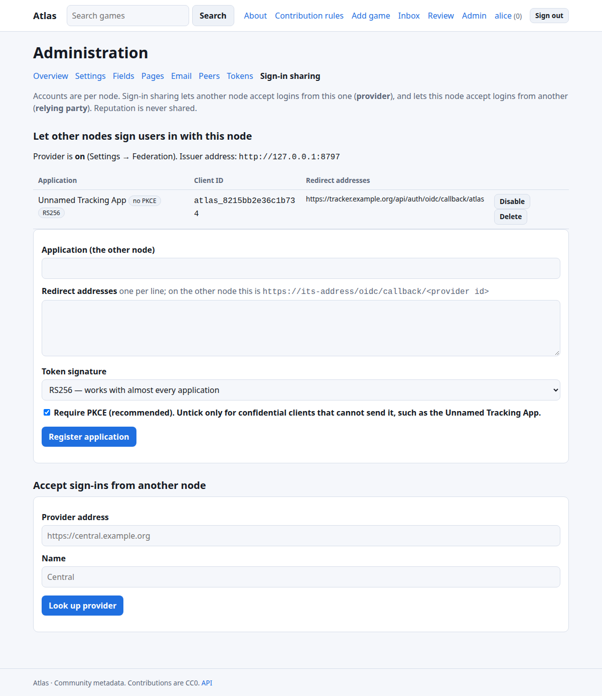
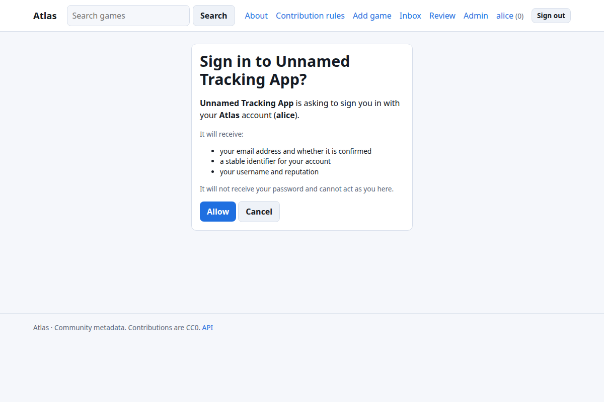

Sign-in sharing (OpenID Connect)¶
Atlas can be an OpenID Connect provider: people who have an account on an Atlas node can use it to sign in to other software. Atlas can also accept sign-ins from another Atlas node. Accounts and reputation always stay per node.
Using this with the Unnamed Tracking App? Jump to Signing in to the Tracking App with Atlas.
What Atlas offers¶
| Flow | Authorization Code (with a consent screen) |
| Discovery | https://<node>/.well-known/openid-configuration |
| Endpoints | /oidc/authorize, /oidc/token, /oidc/userinfo, /oidc/jwks |
| Scopes | openid (required), profile, email |
| Client authentication | client_secret_basic or client_secret_post |
| PKCE | S256; required by default, can be waived per confidential client |
| ID token signature | RS256 (default, works with almost everything) or EdDSA (for other Atlas nodes); both keys are in the JWKS |
| Lifetimes | authorization code 5 min (single use), ID token 10 min, access token 1 h |
| Claims | sub (stable account id), preferred_username, email, email_verified, atlas_reputation |
Not offered: refresh tokens, dynamic client registration, RP-initiated or back-channel logout, group/role claims. Atlas never exports its roles: they are meaningful only on the node that granted them.
1. Turn the provider on¶
Admin → Settings → Federation → Act as a sign-in provider (OIDC). Set ATLAS_PUBLIC_URL to the exact address people use (it is the issuer, and must be https:// in production). Check https://your-node/.well-known/openid-configuration answers.
2. Register the application¶
Admin → Sign-in sharing → Register application
- Name: shown on the consent screen.
- Redirect addresses: one per line, matched exactly.
https://…orhttp://localhost…for testing. The application tells you its address (oftenhttps://app.example.org/…/callback). - Token signature: leave RS256 unless the application is another Atlas node.
- Require PKCE: leave ticked if the application sends PKCE. Untick for confidential clients that cannot (the Tracking App's Authlib client is one).

You are shown a client id and client secret once. Atlas stores only a hash of the secret; if it is lost, delete the application and register it again.
3. Configure the application¶
Give it the issuer / discovery URL (https://your-node), the client id and secret, and scopes openid profile email. Almost every OIDC-capable application then needs nothing else, because it reads the discovery document.
If it asks for endpoints individually, use the ones in the table above. If it wants to map claims: username ← preferred_username, email ← email, unique id ← sub.
Match users by sub where you can. Usernames can change; sub cannot. Do not trust email_verified: false for account linking: Atlas sets it to true only for addresses the person has confirmed.
Quick check with a few lines of Python¶
# pip install authlib httpx
from authlib.integrations.requests_client import OAuth2Session
import requests
disc = requests.get("https://your-node/.well-known/openid-configuration").json()
print(disc["issuer"], disc["id_token_signing_alg_values_supported"])
Atlas's repository contains a complete end-to-end check that drives the real Authlib client stack used by the Tracking App through a login against a live node: tools/compat/tracking_app_oidc.py.
People then see a consent screen the first time each sign-in happens:

Accepting sign-ins from another Atlas node¶
On the node that should accept sign-ins (for example a household node signing in with the central one):
- On your node: Admin → Sign-in sharing → Accept sign-ins from another node → Look up provider. Atlas fetches its discovery and keys and shows the provider's node id fingerprint. Compare it with what the provider's administrator gave you. Atlas pins that key and will only accept ID tokens signed by it (the algorithm is never negotiated). The page also shows the exact redirect address to register.
- On the provider node, register an application as above with that redirect address and signature EdDSA; copy the client id and secret.
- Back on your node, enter the client id and secret (stored encrypted; needs
ATLAS_SECRET_KEY) and choose: - Every user here may link and use it (otherwise you enable it per user in the user list),
- Create an account on first sign-in,
- Trust the provider's confirmed email address.
- The sign-in page now shows a button for the provider.
How accounts are connected:
- A person with an existing local account links it from Profile settings → Linked sign-ins (needs permission, above). Email addresses are never used to take over an existing account; if auto-create is on and the username is taken, a new account with a suffix is made.
- Accounts created this way have no password. They can add one with Forgot password if they have an email, and cannot unlink their only way in.
Troubleshooting¶
| Symptom | Cause |
|---|---|
| “unknown application or redirect address” | The redirect in the request is not exactly one registered (check scheme, port, trailing slash). |
| “PKCE with S256 is required” | The client does not send PKCE; untick Require PKCE for that application. |
| “issuer mismatch” / discovery fails in the app | ATLAS_PUBLIC_URL differs from the address the app uses; they must match exactly. |
| App says the email is missing | The Atlas user has no email address; add one (and on central nodes confirm it). |
invalid_client |
Wrong secret, application disabled, or credentials sent in an unsupported way. |
invalid_grant |
Code reused, expired (5 min), redirect changed between steps, or PKCE verifier wrong. A reused code also revokes its tokens. |
| Provider button missing on your node | Provider disabled, or Accept sign-ins entry is switched off. |
| “External sign-in is not enabled for this account” | Allow the user (user list) or tick Every user… on the provider. |
Security notes¶
- Redirect addresses are exact-match, and an error for an unregistered address is shown on Atlas, never redirected to an unvetted site.
- A person must consent each time. The consent screen names the application and what it receives.
- Codes are single use and are burned by any attempt; replaying one revokes the tokens it produced.
- ID tokens from other Atlas nodes are verified against the key you pinned, with issuer, audience, nonce, expiry and issued-at checks;
alg: noneand algorithm-confusion attempts are rejected (all tested). - Rotating the RSA signing key is not yet a one-click action.